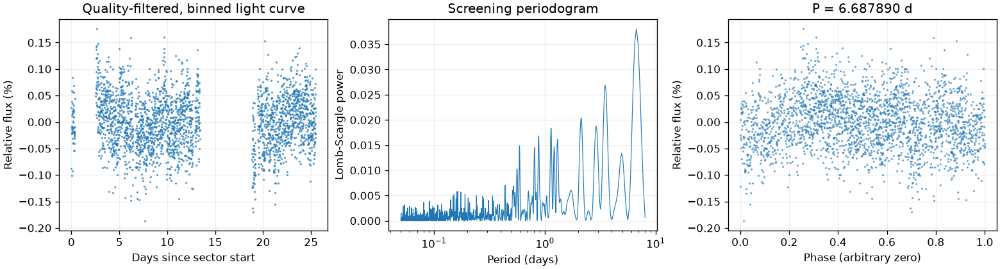

Sector 85 · 6.687890 天
相对幅度估计 0.0547% · 有效点数 12235

Screening peak only; no correlated-noise false-alarm calibration or physical classification.
这是筛选报告，未确认新发现，也不能代替 VSX 提交材料。
图中依次为亮度随时间变化、候选周期强度和折叠后的重复形状。相位零点仅供展示；纵轴是相对通量，不是标定星等。
相对幅度估计 0.0547% · 有效点数 12235

Screening peak only; no correlated-noise false-alarm calibration or physical classification.
{
"ra_deg": 7.63515512939946,
"dec_deg": 62.5669317629366,
"catalog_queries": [
{
"source": "VSX",
"status": "historical_snapshot",
"checked_at": "2026-11-09",
"note": "Archived neighborhood query only; identity and novelty not fully reviewed."
}
],
"vsx_neighbors": [
{
"Name": "Gaia DR3 430373624488200704",
"RA2000": "7.56047",
"Declination2000": "62.57440",
"ProperMotionRA": "-2.6910",
"ProperMotionDec": "-1.3520",
"VariabilityType": "RS",
"MaxMag": "17.05 G",
"MinMag": "17.20 G",
"SpectralType": "F",
"Discoverer": "Gaia collaboration",
"Category": "Variable",
"OID": "2591027",
"Constellation": "Cas",
"sep_arcsec": 126.73898245551342
},
{
"Name": "Gaia DR3 430370772629918592",
"RA2000": "7.60375",
"Declination2000": "62.57846",
"VariabilityType": "S",
"MaxMag": "16.94 G",
"MinMag": "18.11 G",
"SpectralType": "B",
"Discoverer": "Gaia collaboration",
"Category": "Variable",
"OID": "8282438",
"Constellation": "Cas",
"sep_arcsec": 66.59154000339629
},
{
"Name": "Gaia DR3 430370467694198400",
"RA2000": "7.68082",
"Declination2000": "62.56158",
"ProperMotionRA": "-3.0820",
"ProperMotionDec": "-1.0090",
"VariabilityType": "RS",
"MaxMag": "17.00 G",
"MinMag": "17.10 G",
"SpectralType": "F",
"Discoverer": "Gaia collaboration",
"Category": "Variable",
"OID": "2591908",
"Constellation": "Cas",
"sep_arcsec": 78.15678248640073
},
{
"Name": "ZTF J003046.32+623419.7",
"RA2000": "7.69302",
"Declination2000": "62.57215",
"VariabilityType": "BY",
"Period": "2.2436389",
"Epoch": "2458273.9269",
"MaxMag": "18.011 r",
"MinMag": "(0.087) r",
"Discoverer": "Zwicky Transient Facility (ZTF)",
"Category": "Variable",
"OID": "1557570",
"Constellation": "Cas",
"sep_arcsec": 97.78557085999334
},
{
"Name": "Gaia DR3 430745779116749312",
"RA2000": "7.70112",
"Declination2000": "62.57256",
"ProperMotionRA": "5.4240",
"ProperMotionDec": "-4.8030",
"VariabilityType": "ROT",
"MaxMag": "15.64 G",
"MinMag": "15.71 G",
"SpectralType": "K",
"Discoverer": "Gaia collaboration",
"Category": "Variable",
"OID": "2592055",
"Constellation": "Cas",
"sep_arcsec": 111.25711370357634
}
],
"notes": [],
"errors": [],
"repeatability": {
"status": "insufficient_epochs",
"fractional_spread": null
},
"localization": null,
"submission": {
"name": null,
"ra_deg": null,
"dec_deg": null,
"coordinate_source": null,
"coordinate_epoch": null,
"variability_type": null,
"period_days": null,
"period_error_days": null,
"epoch": null,
"epoch_time_standard": null,
"epoch_event": null,
"max_magnitude": null,
"min_magnitude": null,
"passband": null,
"magnitude_source": null,
"mean_magnitude": null,
"amplitude_magnitude": null,
"amplitude_passband": null,
"discoverers": null,
"references": null
}
}